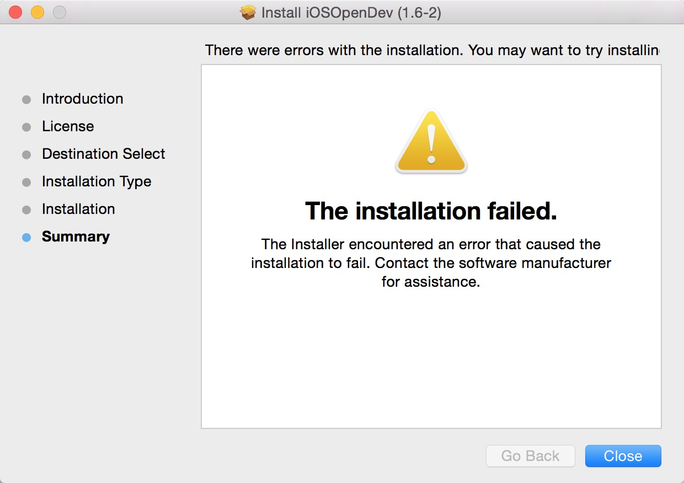
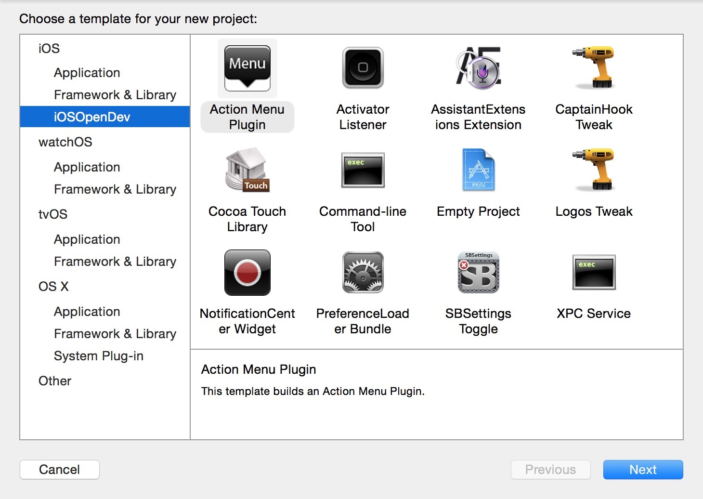

从 iosopendev 官网上下载最新的 iOSOpenDev 1.6-2 Installer安装包安装。
安装过程中可能会遇到安装失败的情况，如下：

虽然安装失败了，但是在 /opt 下还是创建了三个目录：
iOSOpenDev
iOSOpenDevSetup
iOSOpenDevUninstall
在 iOSOpenDevSetup/bin 里面已经有一个 shell 脚本：iod-setup，安装的过程实际上就是执行 iod-setup 脚本。
查看资料，直接运行：
sudo ./iod-setup base
发现总是在下载某个东西时失败，查看 iod-setup 脚本定位问题，发现有三个 downloadGithubTarball 的地方，直接注释掉，然后手动去下载这三个东西并拷贝到 iOSOpenDev 目录。
手动下载：
https://github.com/kokoabim/iOSOpenDev
https://github.com/kokoabim/iOSOpenDev-Xcode-Templates
https://github.com/kokoabim/iOSOpenDev-Framework-Header-Files
拷贝：
sudo cp -r iOSOpenDev/* /opt/iOSOpenDev/
(iOSOpenDev里，sudo mkdir templates)
sudo cp -r iOSOpenDev-Xcode-Templates/* /opt/iOSOpenDev/templates
(iOSOpenDev里，sudo mkdir frameworks)
sudo cp -r iOSOpenDev-Framework-Header-Files/* /opt/iOSOpenDev/frameworks
再次安装：
sudo ./iod-setup base
指定最新 Xcode sdk:
sudo ./iod-setup sdk -sdk iphoneos
成功，表现为：
1、~/Library/Developer/Xcode/Templates/ 里面会多出 iOSOpenDev 模板。
2、open -e ~/.bash_profile 会看到
export iOSOpenDevPath=/opt/iOSOpenDev
export iOSOpenDevDevice=
export PATH=/opt/iOSOpenDev/bin:$PATH
最后，重新启动 Xcode。新建工程就可以看到多了一个 “iOSOpenDev” 模板了。
